Contents
MyMainScript
tic;
Your code here
clear;
Reading images
im1 = imread('../data/bird.jpg');
im2 = imread('../data/flower.jpg');
mask generation for bird
rng(180050004);
im = im1;
hs = 10;
hr = 80;
resize = 1;
num_clusters = 30;
iter2 = 30;
[output1,shifting_points1,idx1] = myMeanShiftSegmentation(im,hs,hr,resize,num_clusters,iter2);
idx1 = reshape(idx1,[size(output1,1),size(output1,2)]);
M = idx1;
M(M==14 | M==19 | M==1) = 1;
M(M~=1) = 0;
M = my_edit(logical(M));
Elapsed time is 399.084052 seconds.
Original Image, Mask for foreground of "flower.jpg", Blacked out foreground , blacked out bakground
save("../images/im1.mat","im1");
imshow(im1);
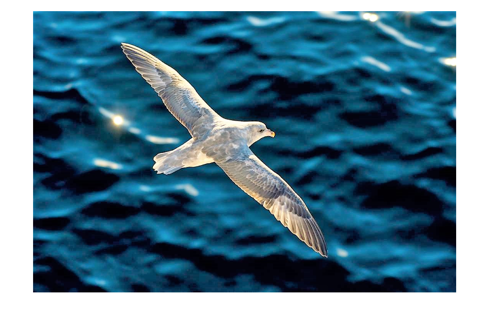
save("../images/M_bird.mat","M");
imshow(logical(M));
X = im1;
Aa = M==0;
Ma = zeros(size(im1));
Ma(:,:,1) = Aa;
Ma(:,:,2) = Aa;
Ma(:,:,3) = Aa;
X(Ma==0)=0;
save("../images/Background_Bird.mat","X");
imshow(X);
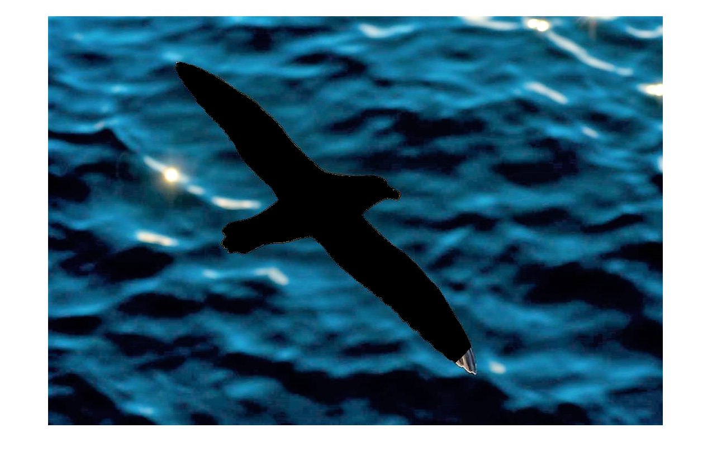
X = im1;
X(Ma==1)=0;
save("../images/Foreground_Bird.mat","X");
imshow(X);
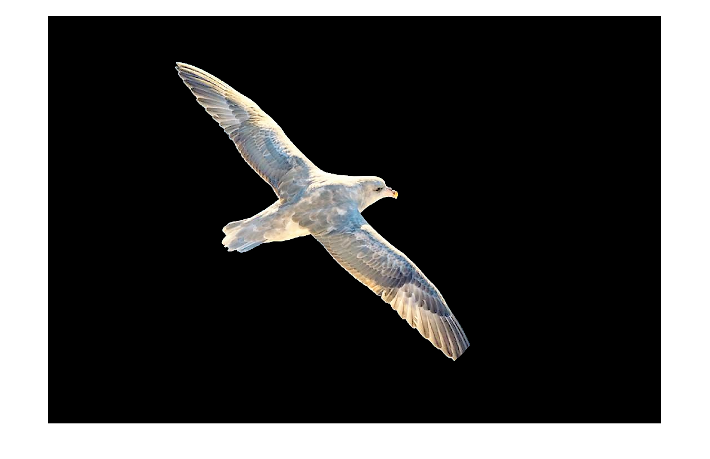
Blurring of background for "bird.jpg"
Out = zeros(size(im1));
[Out(:,:,1), ~] = mySpatiallyVaryingKernel(im1(:,:,1),M,40);
[Out(:,:,2),~] = mySpatiallyVaryingKernel(im1(:,:,2),M,40);
[Out(:,:,3),krnl] = mySpatiallyVaryingKernel(im1(:,:,3),M,40);
Out(:,:,1) = mat2gray(Out(:,:,1));
Out(:,:,2) = mat2gray(Out(:,:,2));
Out(:,:,3) = mat2gray(Out(:,:,3));
save("../images/BackgroundBlur_Bird.mat","Out");
imshow(Out);
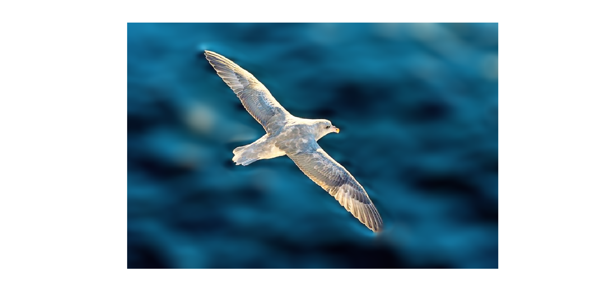
Space varying r values for "bird.jpg"
myNumOfColors = 40;
myColorScale = [ [0:1/(myNumOfColors-1):1]' , [0:1/(myNumOfColors-1):1]' , [0:1/(myNumOfColors-1):1]' ];
save("../images/rvalues_Bird.mat","krnl");
imagesc(single(krnl),[0,40]), title('Kernel bird'),colormap(myColorScale),daspect ([1 1 1]); axis tight; colorbar;
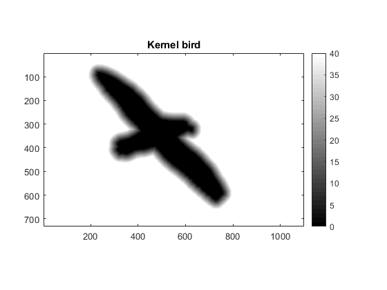
Blurring kernels
imshow(fspecial('disk',0.2*40),[]);

imshow(fspecial('disk',0.4*40),[]);

imshow(fspecial('disk',0.6*40),[]);
imshow(fspecial('disk',0.8*40),[]);
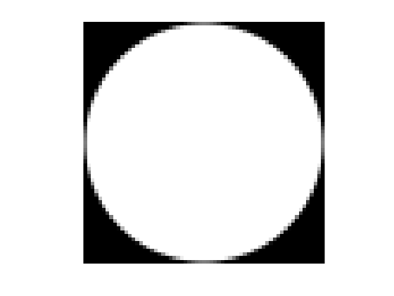
imshow(fspecial('disk',40),[]);
mask generation for flower
rng(180050109);
im = im2;
hs = 7;
hr = 36;
resize = 1;
num_clusters = 25;
iter3 = 40;
[output3,shifting_points3,idx3] = myMeanShiftSegmentation(im,hs,hr,resize,num_clusters,iter3);
idx3 = reshape(idx3,[size(output3,1),size(output3,2)]);
M = idx3;
M(M==1) = 0;
M(M==10 | M==7 | M==24) = 1;
M(M~=1) = 0;
Elapsed time is 46.581515 seconds.
Original Image, Mask for foreground of "flower.jpg", Blacked out foreground , blacked out bakground
imshow(im2);
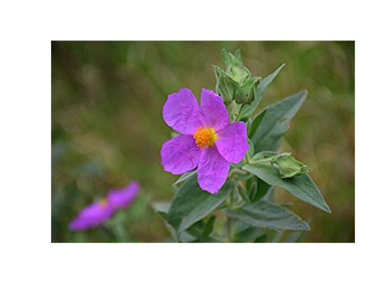
imshow(logical(M));
X = im2;
Aa = M==0;
Ma = zeros(size(im2));
Ma(:,:,1) = Aa;
Ma(:,:,2) = Aa;
Ma(:,:,3) = Aa;
X(Ma==0)=0;
imshow(X);
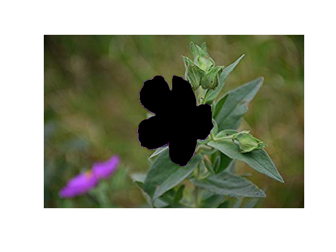
X = im2;
X(Ma==1)=0;
imshow(X);
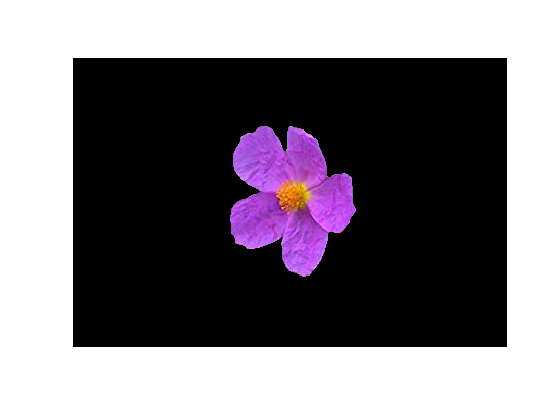
Blurring of background for "flower.jpg"
Out = zeros(size(im2));
[Out(:,:,1),~] = mySpatiallyVaryingKernel(im2(:,:,1),M,20);
[Out(:,:,2),~] = mySpatiallyVaryingKernel(im2(:,:,2),M,20);
[Out(:,:,3),krnl] = mySpatiallyVaryingKernel(im2(:,:,3),M,20);
Out(:,:,1) = mat2gray(Out(:,:,1));
Out(:,:,2) = mat2gray(Out(:,:,2));
Out(:,:,3) = mat2gray(Out(:,:,3));
imshow(Out);
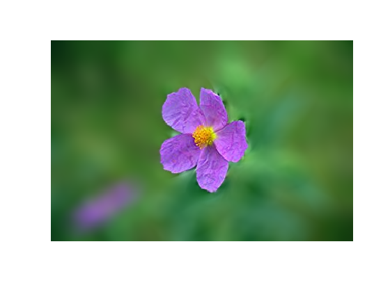
Spacially varying r values for "flower.jpg"
myNumOfColors = 20;
myColorScale = [ [0:1/(myNumOfColors-1):1]' , [0:1/(myNumOfColors-1):1]' , [0:1/(myNumOfColors-1):1]' ];
imagesc(single(krnl),[0,20]), title('kernel flower'),colormap(myColorScale),daspect ([1 1 1]); axis tight; colorbar;
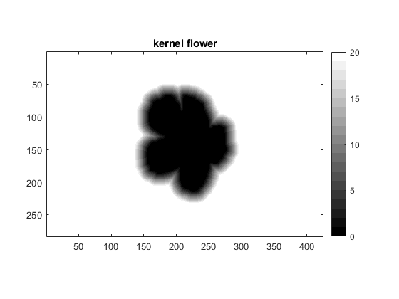
Blurring kernels
imshow(fspecial('disk',0.2*20),[]);
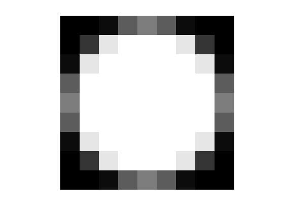
imshow(fspecial('disk',0.4*20),[]);
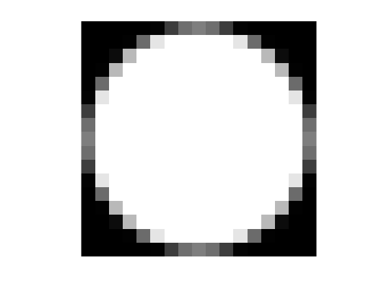
imshow(fspecial('disk',0.6*20),[]);
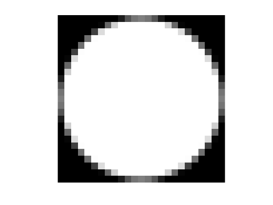
imshow(fspecial('disk',0.8*20),[]);
imshow(fspecial('disk',20),[]);
toc;
Elapsed time is 127.235600 seconds.
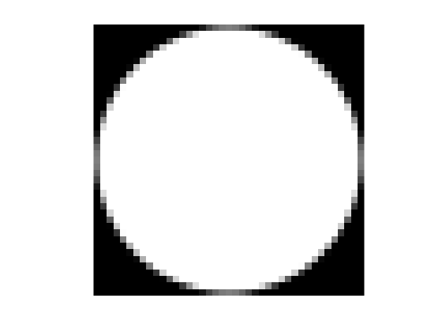